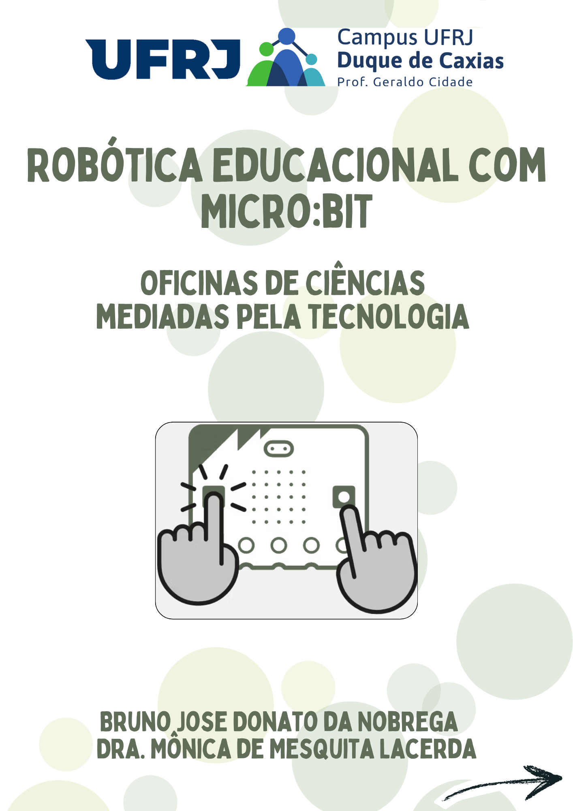

Meninas na Robótica
Guia Prático de Oficinas de Ciências Investigativas com o Micro:bit
Este e-book apresenta uma sequência didática fundamentada no Ensino de Ciências por Investigação (ENCI) e na Aprendizagem Criativa, voltada à promoção do protagonismo feminino em STEM. O material reúne roteiros completos, códigos MakeCode/JavaScript, desafios práticos e materiais de apoio para aplicação da placa BBC Micro:bit em salas de aula da Educação Básica.

Edição Oficial • Acesso Aberto
Leitura Online Interativa
Estrutura Didática das Oficinas
Formação de Multiplicadoras
Fundamentos de eletrônica, programação em blocos e protagonismo pedagógico para alunas e educadoras.
Bússola & Telemetria
Investigação do campo magnético terrestre e comunicação remota via radiofrequência entre micro:bits.
Datalogger & Termologia
Coleta automatizada de séries temporais de temperatura e análise de curvas de equilíbrio térmico.
Energia Solar & Sustentabilidade
Dimensionamento fotovoltaico, circuitos elétricos com micro:bit e eficiência energética renovável.
Foguetes de Garrafa PET
Acelerometria, pressão pneumática, apogeu e telemetria de lançamento aeroespacial experimental.